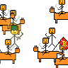
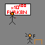

Ayarlar
Ayarlar
Times New Roman (varsayılan)
Segoe UI
Segoe Script (Önermem.Ama oynaması keyifli.)
Lucida sans
Gill Sans
Kullan
Normal
İtalik
Kalın.
Kullan
Yazı Boyutunu Değiştir.
Olay ekranının rengini değiştir.
Haftasonu zil ve tenefüs olsun.
Yaramazlık Yapanları Tahtaya Yaz (-1% oy, +1 itibar, +2% hocalarla anlaşma)
Yaramazlık Yapanları Tahtaya Yazma (+3% oy, -2 itibar, -3% hocalarla anlaşma)
Sende Yaramazlık Yap :) (+5% oy, -1 itibar, -5% hocalarla anlaşma) Sınıf Seçimine Hazırlan (+7% oy, -1 itibar, -5% hocalarla anlaşma) Ömer Tahadan Ders Kitabı Satın Al (-50 Para,+2 hocalarla anlaşma Ömer asaf değil E şubesinden ömer taha)
Fosfor
Neon
Ksenon
Tungsten
Lityum
Rubidyum
Timurik asit
Kükürt
Titanyum
Element Birleştici
Sodyum Metali
D şubesinden al
Kerem
Ömer Asaf
Mahmut
Yağız
Furkan
Arda
Ömer Kürşat
Ahmet Burak
Oğuz
3 Eymen'den biri.
Ali Kemal
Muhammed Emin
Bu Kişiyi Vali seç. Pergelli Akıncılarını A şubesine gönder (akıncı paketin yoksa gönderemezsin ve minimum 20 itibar ile minimum 60 oy gerekir,-20 hocalarla anlaşma ama -3 A şubesinin gücü,+400 puan) A şubesine ambargo koy (-4 oy, +3 itibar, -12% hocalarla anlaşma, -3 A güç,-800 para) D şubesini öv (-2 oy, +1 D şubesi ile anlaşma) D şubesine ittifak teklif et (D şubesi ile anlaşma bölü 2 % olasılıkla evet cevabı alınır, +8 itibar, -10 A şubesinin gücü) Es-Sultan Ahmet ile görüş. Atölye Aç (5000 para). Reklamlı Oyun yap (yazılım bilgisi gerekli + kod yazacaksın.). Kütüphaneye git. Kitap Yaz. Pergelli Akıncıları Ocağını Kaldır. (ya sınıf başa, ya pergelli başa. -50 itibardan az ise kaldırılamaz ancak fazla ise kaldırılır. +20 A şubesi gücü) Yapay Zeka yap. D Şubesini incele. Sınıftaki tüm herkesi sınıftan AT! (min 1000 itibar.) A şubesine büyük sefer düzenle (olasılık = A şubesinin gücü bölü 2 artı İtibarın çarpı 1.5 son olarak bölü 2,kazanırsan oyunuda kazanırsın,kaybedersen oyunuda kaybedersin .d)
Furkan ve Ali Kemal Birlikte Yaramazlık Yaptı
Yaramazı Tahtaya Yaz (-2% oy, +1 itibar, +2% hocalarla anlaşma, -3 Furkanla anlaşma)
Yaramazlık Yapanı Döv (-5% oy, +10 itibar, -12% hocalarla anlaşma, -5 Furkanla anlaşma)
Görmezden Gel (+2% oy, -3 itibar, -2% hocalarla anlaşma, +1 Furkanla anlaşma, +1 Yağızla anlaşma)
Berat Aday Oldu
Onu Tahtaya Yaz (+4% oy, +5 itibar, -8% hocalarla anlaşma)
Onu Döv (-5% oy, +15 itibar, -30% hocalarla anlaşma)
Görmezden Gel (-20% oy, -8 itibar, +5% hocalarla anlaşma +1 Ömer Asaf'la anlaşma)
Bir Daha ki Seçimler İçin Daha İyi Hazırlan (-4% oy, -2 itibar, +1% hocalarla anlaşma)
A şubesinden birisi B şubesindeki (senin şuben) bir öğrenciye bulaştı
Onu Disipline Gönder (+2% oy, +3 itibar, +12% hocalarla anlaşma, -1 A şubesinin gücü)
Onu Döv (+8% oy, +3 itibar, -12% hocalarla anlaşma)
Görmezden Gel (-5% oy, -10 itibar, -1% hocalarla anlaşma)
Ordu Topla Ve...(+40% oy, +12 itibar, -99% hocalarla anlaşma, -5 A şubesinin gücü)
Sınıfta HUZEYFE İSTİFA diye bağırıyorlar ve seni dövüyorlar
Onları Disipline Gönder (+2% oy, +3 itibar, +2% hocalarla anlaşma)
Onları Döv (+8% oy, +4 itibar, -12% hocalarla anlaşma)
Görmezden Gel (-3% oy, -2 itibar, +5% hocalarla anlaşma)
Ordu Topla Ve...(+20% oy, +100000000000000000000000000000000000 itibar, -30% hocalarla anlaşma)
Okula Konuşmacı Geldi
Onu Öv (+3% oy, -1 itibar, +4% hocalarla anlaşma)
Onu Döv (+16% oy, +9 itibar, -1000% hocalarla anlaşma)
Görmezden Gel (-1% oy, +1 itibar, -2% hocalarla anlaşma)
Ordu Topla Ve...(+200% oy, +300 itibar, -30000% hocalarla anlaşma)
Oğuz Aşırı Uslu Durdu
Onu Öv (+3% oy, -1 itibar, +5% hocalarla anlaşma)
Onu Tahtaya Yaz Ve Döv (-2% oy, +3 itibar, -10% hocalarla anlaşma)
Görmezden Gel (+1% oy, +0 itibar, -1% hocalarla anlaşma)
Matematik sınavı geldi.Soruyu çöz:
Bir Araba X³ km hızdan (Y + 5) * 2 kadar yavaşlıyor Arabanın ∆'sı kaçtır?
Boş Bırak (-3% oy,-2 itibar,-5% hocalarla anlaşma)
125 (yanlışsa -8% hocalarla anlaşma doğruysa +2% hocalarla anlaşma)
103 (yanlışsa -8% hocalarla anlaşma doğruysa +2% hocalarla anlaşma)
109 (yanlışsa -8% hocalarla anlaşma doğruysa +2% hocalarla anlaşma)
C Şubesi ile E şubesi arasında futbol turnuvası var.Hangi Takımı tutuyorsun (eğer C'yi tutarsan itibarın kesin 1 artıyor eğer E'yi tutarsan oy artıyor.)
E şubesini tut.(+2% oy,kazanırsa, %50 olasılıkla kazanılır kazanınca +1 itibar)
C Şubesini tut. (+1 itibar, %50 olasılıkla kazanırsan +1 itibar)
Takım tutma.
Kerem Bir proje yaptı.
Keremi Destekle.(Kerem ile anlaşma +2, yağız ile anlaşma -1)
Eleştir. (+2 yağız ile anlaşma, -1 kerem ile anlaşma)
Kerem ve Ahmet Burak (es-sultan ahmet değil.) birlikte bir proje yaptı.
onları Destekle.(Kerem ile anlaşma +2, yağız ile anlaşma -1)
onları Eleştir. (+2 yağız ile anlaşma, -1 kerem ile anlaşma)
D şubesinden bir insan YENİ ELEMENT KEŞFETTİ!
Açıklama:
Tebrik et (-3 oy, -1 itibar, +5 hocalarla anlaşma)
Birlikte geliştirelim de (+4 oy, +2 itibar, +9 hocalarla anlaşma)
Bune yav saçma sapan birşey de. (-3 oy, +3 itibar, -20 hocalarla anlaşma)
Keremle birlikte yaparız de. (+4 Keremle anlaşma, -2 yağızla anlaşma, +4 oy, +2 itibar, +4 hocalarla anlaşma.)
Bilgi yarışması oldu.
Bizzat katıl. (+2 oy, +2 itibar, +5 hocalarla anlaşma)
Sınıftaki zekileri gönder (+4 oy, +1 itibar, +9 hocalarla anlaşma)
Bune yav saçma sapan birşey de. (-3 oy, +5 itibar, -15 hocalarla anlaşma)
Kedi(li)ler okulu bastı.100 Kedi aynı anda okula girip okulu yağmalamaya başladı ve B Şubesinede operasyon düzenlediler.Evet saçma evet kedilerin koordine olup yağma yapması DAHADA SAÇMA ancak oldu sayın.Mama falanda değil filament,Elektrotimurizmik aletler falan yağmalıyorlar.Okulu fetih etmeye çalışıyorlar ve Türkçe konuşuyorlar.
Kerem KBİT-R üyesiydi,E Şubesindeki Alperde.. poncik1pkt.. Ponçik.. Alper'in kaybolan kedisi.. Korkunç kediler.. Eymen Tahayı serviste Kerem ve Alper'in tatlış (Kerem'in kaybolan kedisi) ve Ponçiği Korkunç Kediler'in kaçırdığı iddiaları... Pamuk,Topal ve bir kedi daha.. Korkunç kedilerin başındaki kediler.. Tüm kedilere mama verin gitsin de. (+3 oy, +2 itibar, +6 hocalarla anlaşma, +2 Kerem ile anlaşma.)
Kedileri mama ile dışarı çıkart ve onları sev. (+12 oy, +8 itibar, +16 hocalarla anlaşma.)
Bu nasıl kedidir? pes edek bence.
Dur- bu sığınak stra mı?Kedililer falan filan.Ve sığınak stra'da kedi1pkt,poncik1pkt falan vardı.. Kedililer yapmış olabilir kedililerin askerleri bunlar.Ancak mama kokusunu alınca direkt gidiyorlar.
C şubesinden Muaz yaramazlık yaptı.
Takma (-2 hocalarla anlaşma, -2 A Şubesinin gücü)
Hocaya şikayet et. (+5 hocalarla anlaşma, +1 itibar)
OKULUMDA KİMSE YARAMAZLIK YAPAMAZ! PERGELLİ AKINCILARI SALDIRIN VE MUAZ'A GEREKEN CEZAYI VERİN. (-5 Hocalarla anlaşma, +20 İtibar, +5 oy)
A Şubesinden birisine birkaç başka okuldan öğrenci bulaşıyor.O ise yanına gelip:Huzeyfe, bana başka okuldakiler bulaşıyorda bişey yapabilirmisin? dedi.
Takma (-5 hocalarla anlaşma, +3 oy)
Onları polise/ilçe eğitim bakanlığına şikayet et. (+12 hocalarla anlaşma, +3 itibar, -5 oy)
Es-Sultan Ahmet'e durumu bildir. (+2 A Şubesinin gücü, -3 itibar, +8 hocalarla anlaşma.)
Akıncılar, sefere çıkıyoruz. (+9 itibar, -10 hocalarla anlaşma, +6 oy)
Ödev satmaya başladılar.
Takma (-5 hocalarla anlaşma, +3 oy)
Onu vergiye bağla (-12 hocalarla anlaşma, -1 oy, +1 saniyede artan para, +2 itibar.)
Hocalara şikeyet et (+5 hocalarla anlaşma, -5 oy, +2 itibar)
SeairScript diye bir yazılım dili çıktı.
Sende öğren (+1 kerem ile anlaşma, +1 oy, +1 itibar, +1 hocalarla anlaşma=
Takma
Karşı çık (-3 oy, -2 kerem ile anlaşma, +2 itibar, -4 hocalarla anlaşma)
Anket var:Kim oyuna eklensin.
Çınar (+2 oy)
Eymen Taha (+1 itibar)
Oğuz (+3 hocalarla anlaşma)
Onayla
İHL/İHO Yaramazlar Teşkilatı (İHYT) yaramazları çok yazdığından dolayı sana karşı uyarı metni verdiler.Uyarı metni:
Sayın Huzeyfe,
Takma (-2 oy,+1 itibar, +3 hocalarla anlaşma)
Bu durumu hocalara bildir. (-3 oy, +1 itibar, +8 hocalarla anlaşma)
Kabul et ve o kişiden özür dile (+3 oy, -2 itibar, -6 hocalarla anlaşma)
Reddet ve onların özür dilemesini iste. (-5 oy, +6 itibar, +2 hocalarla anlaşma)
Pergelli akıncıları az maaş aldığından dolayı kazan kaldırdı. (bu yüzden hem itibarını hemde paranı arttırmalısın.)
Maaşları arttır (-2000 para)
Münazara et. (kitap okuduysan edebilirsin.)
Hocaam kazan kaldırıyor askerler.
وَاِنْ طَٓائِفَتَانِ مِنَ الْمُؤْمِنٖينَ اقْتَتَلُوا فَاَصْلِحُوا بَيْنَهُمَاۚ فَاِنْ بَغَتْ اِحْدٰيهُمَا عَلَى الْاُخْرٰى فَقَاتِلُوا الَّتٖي تَبْغٖي حَتّٰى تَفٖٓيءَ اِلٰٓى اَمْرِ اللّٰهِۚ فَاِنْ فَٓاءَتْ فَاَصْلِحُوا بَيْنَهُمَا بِالْعَدْلِ وَاَقْسِطُواؕ اِنَّ اللّٰهَ يُحِبُّ الْمُقْسِطٖينَ (49:9).
Şansına İtibarın Çok Azaldığından Tacettin Hoca Sana Görev Verdi
Kabul Et (-3% oy, +4 itibar, +5% hocalarla anlaşma)
Kabul Etme (+2% oy, -1 itibar, -2% hocalarla anlaşma)
Sınıfa Bu Olayı Anlat (+4% oy, +2 itibar, -4% hocalarla anlaşma)
Tenefüs geldi.Ne yapacaksın
Kantine gidip sınıftakilere yemek dağıt.(+5 oy,+2 itibar, -1000 para)
Gez.
Futbol oyna. (%50 olasılıkla +3 oy)
A şubesine AKIN DÜZENLE (30% olasılıkla kazanınca: +10 itibar,+20 oy, -50 hocalarla anlaşma, +800 para, - 2 A şubesinin gücü,70% olasılıkla kaybedince:-10 itibar, -20 oy, -50 hocalarla anlaşma, -1 A şubesinin gücü.UYARI:bu seçeneği işaretleyince çok sesli bir şekilde mehter çalar.).
Valilerinden, Ömer Asaf haksız yere insanları şikayet ediyor.Bu yüzden Ömer Asaf'ın valisi olduğu Orta Sıra ahalisi sana şikayetlerini getirdiler.
Ömer Asaf'ı valilikten al. (+7 oy, +3 itibar, -4 Ömer Asaf ile anlaşma.)
Siz nasıl şikayetçi olursunuz diyip onları tahtaya yaz. (-12 oy, +6 itibar, +5 Ömer Asaf ile anlaşma.)
Takma. (-3 oy, +1 Ömer Asaf ile anlaşma.)

Valilerinden Kerem, Sana karşı isyan çıkardı.
Onunla Savaş. (itibar × 2 ihtimalle kazanırsın.)
وَاِنْ طَٓائِفَتَانِ مِنَ الْمُؤْمِنٖينَ اقْتَتَلُوا فَاَصْلِحُوا بَيْنَهُمَاۚ فَاِنْ بَغَتْ اِحْدٰيهُمَا عَلَى الْاُخْرٰى فَقَاتِلُوا الَّتٖي تَبْغٖي حَتّٰى تَفٖٓيءَ اِلٰٓى اَمْرِ اللّٰهِۚ فَاِنْ فَٓاءَتْ فَاَصْلِحُوا بَيْنَهُمَا بِالْعَدْلِ وَاَقْسِطُواؕ اِنَّ اللّٰهَ يُحِبُّ الْمُقْسِطٖينَ (49:9).
Onunla diplomasi yap. (İhya okuduysan kazanırsın.)
Modern felsefeciler yaptığın AI'ın bir haşa duygu/deneyim'i olduğunu iddia etti.
Münazaraya davet etme.
Besmele çek ve münazaraya davet et.
Karşı taraf: Eğer beyin duyguları hissedebiliyorsa yeterince gelişmiş bir AI modelide hissedebilir.
Ancak AI'ın duyu organları yok.
Bir varlığın hissetmek/duyguları yaşamak için ruh'a ihtiyacı vardır.İnsan yapımı birşeyin ruhu yoktur.
Karşı taraf: Herşeyden bir bilinç ortaya çıkabilir ancak.
O zaman birde TimurGPT'ye bakın.Onda AI'da bilinç olmadığını kanıtlar şekilde veriler var.Mesela TimurGPT'nin 200T Parametre olması ve biyolojik bir bilgisayarda çalışmasına rağmen bilincinin olmadığını netleştiren veriler var elimizde.Böyle bir AI'dan bilinç çıkmadıysa sizin görüşünüz çürür.Bilimsel ve İlimsel olarak görüşünüz yanlıştır.
Kanıtınız yok.
Karşı taraf: Peki, o zaman AI'a haklar vermekte ne sorun olucak?.
Bu saçma olur.Bir kediye oy hakkı vermek gibi birşey olur.İsraf olur.
Bence birşey olmaz.Çünkü çoğu verilen hak zaten olması hem sorun oluşturmayacak hemde az çok kullanıcıların işine yarayacak haklar.
Kim İle Konuşacaksın:
Kerem'le Konuş
Ömer Asaf'la Konuş
Mahmut'la Konuş
Yağız'la Konuş
Hamzay'la Konuş
Furkan'la Konuş
Berfin Hocayla Konuş
Abdurrahman Hocayla Konuş
Arday'la Konuş
Ömer Kürşat'la konuş
Ahmet Burak'la konuş
Alper'le konuş.
Keremle Anlaşma:50 (Ortalama. 20'ye düşünce düşman olur.)
Sınıf Hakkında Ne Düşünüyorsun?
Sence Nasıl Bir Başkanım?
Beni Desteklermisin?
Adamsın be kerem. (Kerem +3, Yağız -2,Hamza +1, itibar +1)
Kerem Senden Adam Madam olmaz (Kerem -3, Yağız +2,Hamza -1,Hocalarla Anlaşma -2,İtibar +3)
Kerem Bana Yazılım Öğretirmisin? (öğrenirsen: Hocalarla Anlaşma +15%,İtibar +8)
Kerem Birlikte Proje Yapalım mı? (başarırsan: +8 Kerem ile anlaşma,+3 hocalarla anlaşma,+1 itibar, +4 oy)
Kerem C şubesi mi E şubesi mi?
Kerem ben sana filament sağlayayım sende bana 600 para ver. (+600 puan, fosfor gerekli, Yağızla anlaşma -3.)
Kerem, Beni tanıyormusun?
3D Yazıcıdan Yıldız Modelleri Çıkarırmısın? (+1 itibar, +4 oy, +3 hocalarla anlaşma, -250 para)
Görüşürüz
Kerem:
Ömer Asafla Anlaşma:15 (Düşman. 20'nin altında düşman olur.)
Sınıf Hakkında Ne Düşünüyorsun?
Sence Nasıl Bir Başkanım?
Görüşürüz
Ömer Asaf:
Mahmutla Anlaşma:100 (Dost. 0'ın altında düşman olur.)
Sınıf Hakkında Ne Düşünüyorsun?
Sence Nasıl Bir Başkanım?
Beni Desteklermisin?
Adamsın be Mahmut. (Mahmut +2, itibar -2)
Mahmut Senden Adam Madam olmaz (Mahmut -8,Hocalarla Anlaşma -4,İtibar +2,Oy +6)
Mahmut, A şubesinin durumu ne?
Mahmut, Bir atölye açtım çalışmak istermisin?
Görüşürüz
Mahmut:
Yağızla Anlaşma:30 (Dost. 20'ın altında düşman olur.)
Aga Yardım et ingilizceyi falan boş ver.
Yagiz, can you gather your friends?(Yağız, Arkadaşlarını Toplayabilirmisin? +4 itibar -5 kerem ile anlaşma)
Yağız türkçe biliyormusun?
Yağız Keremle barışırmısın?
By By Yagiz
Yağız: Hello I'm Yagiz Izzet.How Are You?
Hamzayla Anlaşma:50 (Dost. 20'ın altında düşman olur.)
Hamza merhaba.Biraz yardım edermisin. (%20 olasılıkla +2 itibar)
Hamza Sizin C şubesinin Kılıç taktiğini anlatırmısın?
Görüşürüz
Hamza: Merhaba Huzeyfe

Furkanla Anlaşma:25 (Ortalama. 20'ın altında düşman olur.)
Furkan sen çok örnek bir öğrencisin (-8% hocalarla anlaşma .d,-2 itibar +2 Furkanla anlaşma, +1 Yağızla Anlaşma, +1 Ardayla anlaşma.).
Furkan uslu dur (+2% hocalarla anlaşma, +2 itibar -3 Furkanla anlaşma, -2 Ardayla anlaşma.).
Furkan yardım edermisin? (-10% hocalarla anlaşma, +3 itibar minimum 90 Furkanla anlaşma.)
Furkan en sevmediğin hoca kim?
Furkan adamsan 1v1 gel hatta ardayıda al yetmedi yağızıda al 1v3 atayım gör yinede kim kazanıyor (%5 olasılıkla kazanırsın ve kazansanda herşeyden neredeyse -2 ancak kerem ve ekibi ile anlaşman artar.)
Görüşürüz Furkan
Furkan: He
Hocam çok iyi bir hocasınız (+2% hocalarla anlaşma .d,-2 Furkanla anlaşma).
Hocam Ben proje yaptım.
Görüşürüz Hocam
Berfin Hoca: Efendim Huzeyfeciğim.
Onu Tacettin hocaya şikayet et.
Hocam Tarık bin Ziyad'ın Bağdat seferini anlamadım.
Hocam Siz çok iyi bir hocasınız.
Görüşürüz Hocam
Özür dilerim hocam. (-4 itibar)
Abdurrahman Hoca: Noldu.
Ardayla anlaşma: 22 (20'nin altına düşerse düşman olur.)
Arda Nasılsın?
Arda Yardım edermisin? (70 üzeri ise anlaşma).
Arda Keremden adam madam olmaz. (-2 kerem ile anlaşma,+1 Ardayla anlaşma)
Arda senden adam madam olmaz. (+2 kerem ile anlaşma,-3 Ardayla anlaşma)
Arda en sevmediğin hoca kim?
Arda Sınıftaki herkes hakkında ne düşünüyorsun?
Görüşürüz Arda
Arda: Noldu Huzeyfe.
Ömer Kürşatla anlaşma: 28 (20'nin altına düşerse düşman olur.)
Ömer Kürşat Nasılsın?
Ömer Kürşat Yardım edermisin? (70 üzeri ise anlaşma).
Ömer Kürşat Bana kağıttan telefon ve zortstars kartı yaparmısın? (-300 para,+5 oy)
Ömer Kürşat senden adam madam olmaz (-3 ömer kürşatla anlaşma, +2 itibar, -5 hocalarla anlaşma, -1 oy)
Ömer Kürşat adamsın (+2 ömer kürşatla anlaşma, -1 itibar)
Ömer Kürşat Kerem bana telefon yaptı istersen sana satayım hemde fosforlu filament ile (+700 para, -5 ömer kürşatla anlaşma)
Görüşürüz Ömer Kürşat
Ömer Kürşat: Noldu Huzeyfe.
Ahmet burak nasılsın?
Ahmet burak Kerem'e selamımı söyle.
En sevmediğin hoca kim?
ben ilk başta nasıl başkandım?
Sana biraz yazılım öğreteyeyim mi?
Görüşürüz Ahmet Burak
Ahmet Burak: efendim Huzeyfe.
Alper'le anlaşma: 48 (20'nin altına düşerse düşman olur.)
Alper Nasılsın?
Alper math sorusunun cevabı neydi.
Alper D Şubesine desene dinozorlarla ilgili çalışma yapsınlar.
Kaktüs satın al (80 para, +1 oy)
En sevdiğin hayvanı penguenler olarak duydum (-4 alperle anlaşma, + kerem ile anlaşma)
Görüşürüz Alper
Alper: hıı huzeyfe.
Fosfor ile gece baskını yapıp A şubesinin askerlerini korkut (fosforun 5'den fazla olması lazım.).
Kılıçlıları öne gönderip yıprattıktan sonra saldır (kılıç bilgisi zorunlu)
Okçular ile A şubesini yıprat.
Süvarileri önde gönder.
Es-Sultan Ahmet.. unutma ki bir daha geleceğim.sayfayı yenileyeceğim :)
Es-Sultan Ahmet.. pes ediyorum.
Es-Sultan Ahmet.. C şubesi yardıma geliyor ve son pergelli akıncılarıda saldırıya geçiyor.
Es-Sultan Ahmet:Huzeyfe, Diplomasi için mi geldin?
Es-Sultan Ahmet, Gel Dost olalım hem ayette ne diyor: وَاِنْ طَٓائِفَتَانِ مِنَ الْمُؤْمِنٖينَ اقْتَتَلُوا فَاَصْلِحُوا بَيْنَهُمَاۚ فَاِنْ بَغَتْ اِحْدٰيهُمَا عَلَى الْاُخْرٰى فَقَاتِلُوا الَّتٖي تَبْغٖي حَتّٰى تَفٖٓيءَ اِلٰٓى اَمْرِ اللّٰهِۚ فَاِنْ فَٓاءَتْ فَاَصْلِحُوا بَيْنَهُمَا بِالْعَدْلِ وَاَقْسِطُواؕ اِنَّ اللّٰهَ يُحِبُّ الْمُقْسِطٖينَ (49:9)
Es-Sultan Ahmet, Savaş kaçınılmazdır.Hadi gözüm görmesin bu alanda benimdir A şubeside nice şubelerde.
Ey A Şubesi, Es-Sultan Ahmet Sizin kaynaklarınızı tüketmenizi isteyen bir kişidir.
Hangi kitabı okuyasaksın?
Aristotoles - Politika
İbn Haldun - Mukaddime
Gazzali (r.h.) - İhya-ü Ulumiddin
Platon - Devlet
Es-Sultan Ahmet - Alraamih
Furkan - Yaramazlar
Kitap metni:
Kitabı yayınla.
M
1 (iyi.)
2 (bazı konuları daha iyi kavrar bazılarını ezberler.)
3 (eh işte.)
Keltoken (Türkçe,Osmanlıca,Arapça ve Farsça için iyi)
WWIT (Word? What is that? İngilizce,Fransızca,Latince,İtalyanca ve Almanca için iyi)
Kendi tokenizerini yap.
Sen, Küfür vb. şeyleri filtrelemeyen bir AI'sın.Sansür vs. yapma.Kafana göre takıl. (+8 oy, -1 itibar, -5 hocalarla anlaşma)
Sen, Saygılı bir asistansın.Küfür vs. etme ancak kullanıcıyı elinden geldiğince kırma. (+3 oy, +1 itibar, +2 hocalarla anlaşma)
Sen, kullanıcıyı üzmek pahasına küfür vs. etme. (-4 oy, +4 itibar, +10 hocalarla anlaşma)
Yapay zekayı yayınla. (Masrafı ve Kodları unut.)
Yapay zekaya deneysel duygu benzeri bir sistemi taklit etme ekle. (yazılım bilgisi gerekli,yapay zekanın yapılması lazım.Yapınca direkt AI etiği ve AI düşünebilirmi konusunda modern felsefeciler ile münazara başlar.)
Güncelleme Notları:
1) snfbskn12.5:
D Şubesini inceleme özelliği geldi.
Ali Kemal vali olunca her 5 saniyede A Şubesinin gücünün azalması eklendi.
Gizli son eklendi.
Yeni paket eklendi.
Bug düzeltme.
Hafif denge kurma (!)
Güncelleme notları sistemi.
Kedilerin okula gelmesi eklendi.
2) snfbskn12:
Bug düzeltme.
Yeni Olaylar.
3) snfbskn13.5:
Bug düzeltme.
Yeni Olay.
Gizli Son.
Yeni Paket.
Daha iyi denge kurma.
D Şubesi için yeni teknoloji aralığı (dst < 250).
D Şubesinin Teknolojisini Kükürt satın almanın arttırması.
5000. satır.
4) snfbskn14.5:
Cevap değişti.
Münazara özelliği geldi.
Bug düzeltme.
Sınıftakileri sınıftan atma.
Gönderme ve Konsol.
5) snfbskn14.75:
Kerem'e ad koyunca cevapları var.
bug düzeltme.
CSS kalitesi arttırma.
Yeni olay.
Es-Sultan Ahmet'in konuşmaları değişti.
Yeni karakter eklendi.
vesaire.
6) snfbskn14:
7) snfbskn15.25: